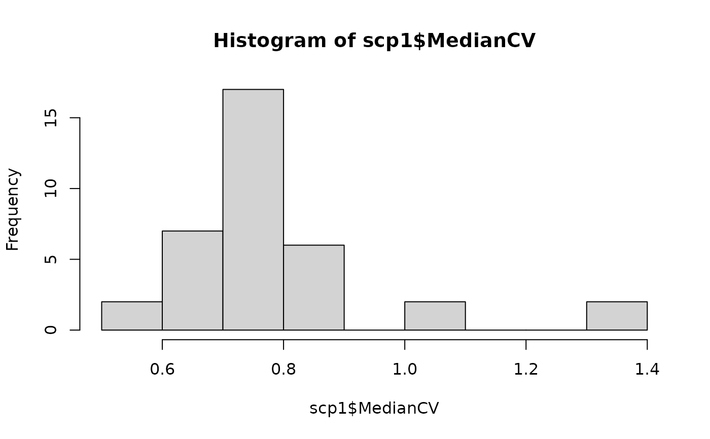

R/compute_metrics.R
medianCVperCell.RdThe function computes for each cell the median CV and stores them
accordingly in the colData of the QFeatures object. The CVs in
each cell are computed from a group of features. The grouping is
defined by a variable in the rowData. The function can be
applied to one or more assays, as long as the samples (column
names) are not duplicated. Also, the user can supply a minimal
number of observations required to compute a CV to avoid that CVs
computed on too few observations influence the distribution within
a cell. The quantification matrix can be optionally normalized
before computing the CVs. Multiple normalizations are possible.
medianCVperCell(
object,
i,
groupBy,
nobs = 5,
na.rm = TRUE,
colDataName = "MedianCV",
norm = "none",
...
)A QFeatures object
A numeric() or character() vector indicating from
which assays the rowData should be taken.
A character(1) indicating the variable name in
the rowData that contains the feature grouping.
An integer(1) indicating how many observations
(features) should at least be considered for computing the CV.
Since no CV can be computed for less than 2 observations,
nobs should at least be 2.
A logical(1) indicating whether missing data should
be removed before computation.
A character(1) giving the name of the new
variable in the colData where the computed CVs will be
stored. The name cannot already exist in the colData.
A character() of normalization methods that will be
sequentially applied to each feature (row) in each assay.
Available methods and additional
information about normalization can be found in
MsCoreUtils::normalizeMethods. You can also specify
norm = "SCoPE2" to reproduce the normalization performed
before computing the CVs as suggested by Specht et al.
norm = "none" will not normalize the data (default)
Additional arguments that are passed to the normalization method.
A QFeatures object.
A new column is added to the colData of the object. The samples
(columns) that are not present in the selection i will get
assigned an NA.
Specht, Harrison, Edward Emmott, Aleksandra A. Petelski, R. Gray Huffman, David H. Perlman, Marco Serra, Peter Kharchenko, Antonius Koller, and Nikolai Slavov. 2021. “Single-Cell Proteomic and Transcriptomic Analysis of Macrophage Heterogeneity Using SCoPE2.” Genome Biology 22 (1): 50.
data("scp1")
scp1 <- filterFeatures(scp1, ~ !is.na(Proteins))
#> 'Proteins' found in 4 out of 5 assay(s)
#> No filter applied to the following assay(s) because one or more filtering variables are missing in the rowData: proteins.
#> You can control whether to remove or keep the features using the 'keep' argument (see '?filterFeature').
scp1 <- medianCVperCell(scp1,
i = 1:3,
groupBy = "Proteins",
nobs = 5,
na.rm = TRUE,
colDataName = "MedianCV",
norm = "div.median")
#> Warning: The median CV could not be computed for one or more samples. You may want to try a smaller value for 'nobs'.
## Check results
hist(scp1$MedianCV)
